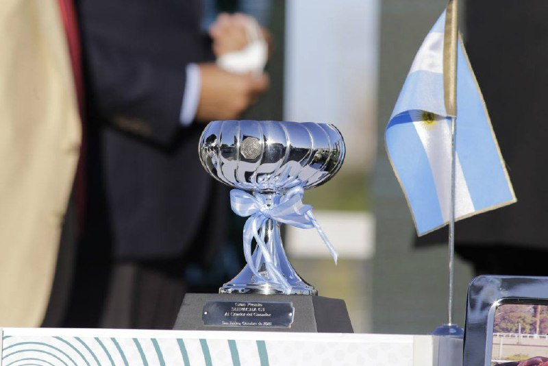

San Isidro reúne 59 ratificados para la Jornada Internacional del 25 de Mayo con cuatro Grupos I
El Hipódromo de San Isidro celebra el lunes 25 de mayo su Jornada Internacional, una de las dos citas mayores del calendario argentino y la principal fiesta del galope llano sudamericano en la primera mitad del año. La reunión, programada en torno a la festividad patria argentina, concentrará cinco clásicas, cuatro…

El Hipódromo de San Isidro celebra el lunes 25 de mayo su Jornada Internacional, una de las dos citas mayores del calendario argentino y la principal fiesta del galope llano sudamericano en la primera mitad del año. La reunión, programada en torno a la festividad patria argentina, concentrará cinco clásicas, cuatro de ellas catalogadas como Grupo I sobre la pista de hierba.
El programa lo encabeza el Gran Premio Internacional 25 de Mayo, sobre 2.400 metros para tres años y mayores, que ha cerrado con doce ratificados. La nómina incluye al ganador de la edición 2025, Honest Boy, y al exportable Epityrum. Le acompañan el Gran Premio de Potrancas (G1-1600 m) para potrancas de dos años, con quince ratificadas y tres ganadoras clásicas en la lista; el Gran Premio Gran Criterium (G1-1600 m) para potrillos de dos años; y el Gran Premio Copa Diamante (G1-1600 m) para hembras de tres años y mayores, con veinte ratificadas y nueve ganadoras clásicas entre ellas.
La cifra global de 59 ratificados llega tras una primera fase con 73 inscriptos, depuración habitual del proceso de confirmaciones del Jockey Club. La organización ha confirmado además que la dotación del 25 de Mayo y de la Copa Diamante asciende a 100 millones de pesos cada una, con 50 millones reservados al ganador de cada prueba.
La jornada se disputa sobre la pista interna de hierba de San Isidro y es referencia de selección para los caballos que aspiren a la cita continental de fin de año, el Gran Premio Carlos Pellegrini. Por su volumen de pruebas de grupo en un solo día, es la cita con mayor concentración de carreras de élite del calendario sudamericano de la primera parte de la temporada.
— Redacción de Galope al Día